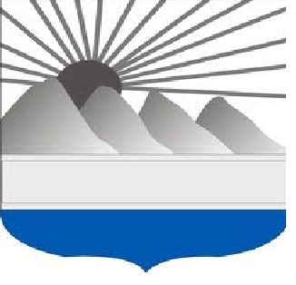

- Azua
- Senador: Lía Ynocencia Díaz Santana
- Población: 256,981

- Bahoruco
- Senador: Melania Salvador Jimenez
- Población: 118,987

- Barahona
- Senador: José Manuel del Castillo Saviñón
- Población: 226,898
- Dajabón
- Senador: David Sosa
- Población: 67,887
- Distrito Nacional
- Senador: Faride Raful
- Población: 1,484,789

- Duarte
- Senador: Franklin Romero Morillo
- Población: 384,789
- Elías Piña
- Senador: Aris Yván Lorenzo Suero
- Población: 70,589
- El Seibo
- Senador: Santiago Jose Zorrilla
- Población: 115,889
- Espaillat
- Senador: Carlos Gómez
- Población: 390,478
- Hato Mayor
- Senador: Cristóbal Castillo
- Población: 89,578
- Hermanas Mirabal
- Senador: Luis Canaán
- Población: 103,974

- Independencia
- Senador: Valentín Medrano
- Población: 54,785
- La Altagracia
- Senador: Virgilio Cedano
- Población: 335,677
- La Romana
- Senador: Iván Fernández
- Población: 330,587
- La Vega
- Senador: Ramón Durán
- Población: 420,478
- María Trinidad Sánchez
- Senador: Alexis Yeb
- Población: 140,784

- Monseñor Nouel
- Senador: Héctor Acosta
- Población: 201,474

- Monte Cristi
- Senador: Ramón Gómez
- Población: 135,710

- Monte Plata
- Senador: Lenin López
- Población: 200,454
- Pedernales
- Senador: Dionis Carrasco
- Población: 38,941

- Peravia
- Senador: Milcíades Franjul
- Población: 298,747
- Puerto Plata
- Senador: Ginnette Bournigal
- Población: 490,733
- Samaná
- Senador: Pedro Bonilla
- Población: 168,265

- Sánchez Ramírez
- Senador: Ricardo de Los Santos
- Población: 157,457

- San Cristóbal
- Senador: Franklin Rodríguez
- Población: 859,741

- San José de Ocoa
- Senador: José Casado
- Población: 82,458

- San Juan
- Senador: Félix Rosario
- Población: 300,476

- San Pedro de Macorís
- Senador: Franklin Villalona
- Población: 418,850

- Santiago
- Senador: Eduardo Virella
- Población: 1,833,451
- Santiago Rodríguez
- Senador: Casimiro Familia
- Población: 164,941

- Santo Domingo
- Senador: Antonio Guzmán
- Población: 2,995,211

- Valverde
- Senador: Martín Vargas
- Población: 207,447